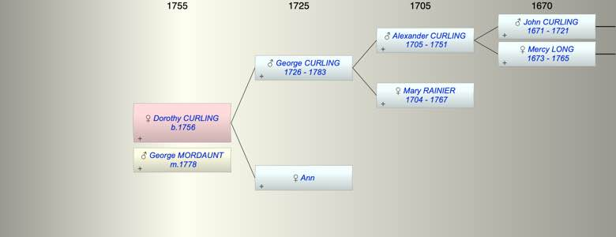

| [Index] |
| Dorothy CURLING (1756 - ) |
|  |
| b. 1756 at Stockton, Durham |
| m. 22 Dec 1778 George MORDAUNT at Holy Trinity Minories |
| Parents: |
| George CURLING (1726 - 1783) |
| Ann |
| Siblings (2): |
| Mary CURLING |
| George CURLING (1755 - ) |
| Events in Dorothy CURLING (1756 - )'s life | |||||
| Date | Age | Event | Place | Notes | Src |
| 1756 | Dorothy CURLING was born | Stockton, Durham | Note 1 | ||
| 22 Dec 1778 | 22 | Married George MORDAUNT | Holy Trinity Minories | Note 2 | |
| 1783 | 27 | Death of father George CURLING (aged 57) | Whitechapel | Note 3 | |
| Created on a Mac™ using iFamily for Mac™ on 8 Oct 2023 |